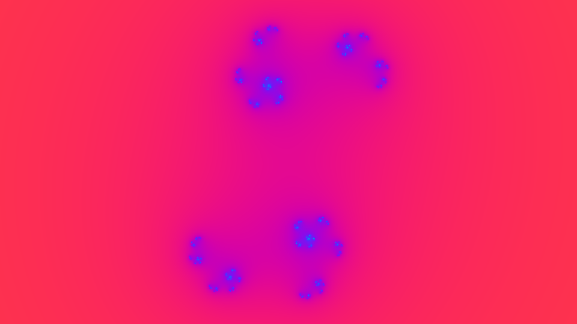

<title>Onda</title>
<meta name="claude:viewport-fit-sides" content="cover">
<link rel="preconnect" href="https://fonts.googleapis.com">
<link rel="preconnect" href="https://fonts.gstatic.com" crossorigin>
<link rel="stylesheet" href="https://fonts.googleapis.com/css2?family=Instrument+Sans:wght@400;500;600&family=JetBrains+Mono:wght@400;500&family=Martian+Mono:wdth,wght@75..112.5,300..700&display=swap">
<style>
/* Layout: bancada de laboratorio. O instrumento (GPU ao vivo + editor) abre a pagina; por baixo, as provas lidas como mostradores. */
:root{
  --paper:#eef1f5; --panel:#ffffff; --ink:#111a24; --muted:#536271; --rule:#d3dae2;
  --accent:#2f3ee8; --accent-ink:#ffffff; --ok:#11784a; --bad:#b4232c;
  --code-bg:#f6f8fb; --code-fg:#1b2633; --code-dim:#66778a;
  --bar-hi:#2f3ee8; --bar-lo:#6f84a8; --grid:#e1e6ec; --screen:#05070a; --screen-ink:#e9eef5;
  --display:"Martian Mono", ui-monospace, "SFMono-Regular", Menlo, Consolas, monospace;
  --body:"Instrument Sans", system-ui, -apple-system, "Segoe UI", Roboto, sans-serif;
  --mono:"JetBrains Mono", ui-monospace, "SFMono-Regular", Menlo, Consolas, monospace;
}
@media (prefers-color-scheme: dark){:root:not([data-theme="light"]){
  --paper:#0c1117; --panel:#121922; --ink:#e4eaf1; --muted:#93a1b0; --rule:#243040;
  --accent:#8e98ff; --accent-ink:#0c1117; --ok:#4cc98a; --bad:#ff7b84;
  --code-bg:#0a0f15; --code-fg:#d6dfe9; --code-dim:#7d8b9a;
  --bar-hi:#7a84ff; --bar-lo:#55688a; --grid:#1c2633; --screen:#000000; --screen-ink:#e9eef5; color-scheme:dark}}
:root[data-theme="dark"]{
  --paper:#0c1117; --panel:#121922; --ink:#e4eaf1; --muted:#93a1b0; --rule:#243040;
  --accent:#8e98ff; --accent-ink:#0c1117; --ok:#4cc98a; --bad:#ff7b84;
  --code-bg:#0a0f15; --code-fg:#d6dfe9; --code-dim:#7d8b9a;
  --bar-hi:#7a84ff; --bar-lo:#55688a; --grid:#1c2633; --screen:#000000; --screen-ink:#e9eef5; color-scheme:dark}
*{box-sizing:border-box}
body{background:var(--paper);color:var(--ink);font:400 16px/1.6 var(--body);-webkit-font-smoothing:antialiased}
.wrap{max-width:1180px;margin:0 auto;padding-left:max(16px,env(safe-area-inset-left,0px));padding-right:max(16px,env(safe-area-inset-right,0px))}
h1,h2,h3{text-wrap:balance;margin:0}
p{margin:0}
code,pre,.code{font-family:var(--mono);font-size:13.5px}
.lbl{font:500 11.5px/1.3 var(--mono);letter-spacing:.08em;text-transform:uppercase;color:var(--muted)}
button,select{font:500 14px/1 var(--body);color:var(--ink);background:var(--panel);border:1px solid var(--rule);border-radius:6px;padding:9px 12px;cursor:pointer}
button:hover,select:hover{border-color:var(--muted)}
button:focus-visible,select:focus-visible,textarea:focus-visible,[tabindex]:focus-visible{outline:2px solid var(--accent);outline-offset:2px}
button.primary{background:var(--accent);color:var(--accent-ink);border-color:var(--accent)}
button:disabled{opacity:.55;cursor:default}

/* topo */
.top{display:grid;grid-template-columns:minmax(0,1fr) auto;gap:28px 48px;align-items:end;padding-block:44px 28px}
.mark{font:300 clamp(64px,13vw,148px)/.86 var(--display);font-stretch:112.5%;letter-spacing:-.04em}
.mark b{font-weight:600;color:var(--accent)}
.thesis{margin-top:20px;max-width:58ch;font-size:19px;line-height:1.5}
.facts{display:grid;gap:14px;margin:0;min-width:0}
.facts div{display:grid;gap:2px;border-left:2px solid var(--rule);padding-left:14px}
.facts dt{font:500 11.5px/1.3 var(--mono);letter-spacing:.08em;text-transform:uppercase;color:var(--muted)}
.facts dd{margin:0;font:500 22px/1.2 var(--display);font-stretch:87.5%;font-variant-numeric:tabular-nums}

/* instrumento */
.lab{display:grid;grid-template-columns:minmax(0,1.45fr) minmax(0,1fr);gap:20px;padding-block:8px 56px}
.scope{min-width:0;display:grid;gap:10px;align-content:start}
.screen{position:relative;background:var(--screen);border-radius:10px;overflow:hidden;aspect-ratio:16/9;max-width:100%}
.screen canvas,.screen img{display:block;width:100%;height:100%;object-fit:cover}
.readout{position:absolute;left:0;right:0;bottom:0;display:flex;justify-content:space-between;gap:12px;padding:10px 14px;font:500 12px/1.2 var(--mono);color:var(--screen-ink);background:linear-gradient(transparent,rgba(0,0,0,.55));font-variant-numeric:tabular-nums;pointer-events:none}
.scope-bar{display:flex;flex-wrap:wrap;gap:10px;align-items:center}
.scope-bar label{margin-right:-4px}
.ed{min-width:0;display:grid;gap:10px;align-content:start}
.ed-head,.out-head{display:flex;justify-content:space-between;align-items:center;gap:10px;flex-wrap:wrap}
textarea{width:100%;min-height:300px;resize:vertical;background:var(--code-bg);color:var(--code-fg);border:1px solid var(--rule);border-radius:8px;padding:12px 14px;font:400 13.5px/1.55 var(--mono);tab-size:2;white-space:pre;overflow:auto}
.status{font-size:14px;line-height:1.45;color:var(--muted);min-height:2.9em}
.status.ok{color:var(--ok)} .status.bad{color:var(--bad)}
.tabs{display:flex;gap:4px}
.tabs button{padding:7px 10px;font-size:13px}
.tabs button[aria-selected="true"]{background:var(--ink);color:var(--paper);border-color:var(--ink)}
pre.code{margin:0;background:var(--code-bg);color:var(--code-fg);border:1px solid var(--rule);border-radius:8px;padding:12px 14px;overflow:auto;line-height:1.5}
pre.out{max-height:250px;font-size:12.5px;color:var(--code-dim)}
.size{font:500 12px/1 var(--mono);color:var(--muted);font-variant-numeric:tabular-nums}

/* secoes */
.sec{padding-block:56px;border-top:1px solid var(--rule)}
.sec h2{font:500 clamp(26px,3.4vw,36px)/1.15 var(--display);font-stretch:87.5%;letter-spacing:-.02em}
.lead{margin-top:14px;max-width:66ch;font-size:17.5px;color:var(--ink)}
.ops3{display:grid;grid-template-columns:repeat(3,minmax(0,1fr));gap:28px;margin-top:32px}
.ops3 article{display:grid;gap:8px;align-content:start;min-width:0}
.ops3 .op{font:500 18px/1.2 var(--mono);color:var(--accent)}
.ops3 h3{font:600 17px/1.3 var(--body)}
.ops3 p{color:var(--muted);max-width:40ch}
.read{margin-top:36px;display:grid;gap:10px;max-width:820px}
.read p:last-child{color:var(--muted);max-width:66ch}

.proofs{display:grid;gap:48px;margin-top:28px}
.proof{display:grid;gap:14px;min-width:0}
.proof h3{font:600 19px/1.3 var(--body)}
.proof > p{max-width:70ch}
.note{font-size:14px;color:var(--muted);max-width:76ch}
.chain{list-style:none;margin:4px 0 0;padding:0;display:grid;grid-template-columns:repeat(4,minmax(0,1fr));gap:0}
.chain li{position:relative;display:grid;gap:3px;padding:14px 16px;border:1px solid var(--rule);background:var(--panel);min-width:0}
.chain li+li{border-left:none}
.chain li:first-child{border-radius:8px 0 0 8px}.chain li:last-child{border-radius:0 8px 8px 0}
.chain li+li::before{content:"→";position:absolute;left:-9px;top:50%;transform:translateY(-50%);background:var(--paper);color:var(--muted);font:500 13px/1 var(--mono);padding:2px 0}
.chain span{font:500 14.5px/1.3 var(--mono);overflow-wrap:anywhere}
.chain small{font-size:13px;color:var(--muted);line-height:1.35}
.verify{display:flex;flex-wrap:wrap;gap:12px;align-items:center}
#vres{font-size:14.5px;line-height:1.45;max-width:70ch}
#vres.ok{color:var(--ok)} #vres.bad{color:var(--bad)}

.chart{display:grid;gap:26px;position:relative}
.cg{display:grid;gap:7px;min-width:0}
.cg h4{margin:0;font:600 15px/1.3 var(--body)}
.cg h4 small{font-weight:400;color:var(--muted)}
.crow{display:grid;grid-template-columns:minmax(150px,230px) minmax(0,1fr) 128px;align-items:center;gap:12px;padding:3px 0;border-radius:4px}
.crow:hover,.crow:focus-visible{background:var(--code-bg)}
.crow .cl{font-size:14px;line-height:1.3;min-width:0}
.crow.hi .cl{font-weight:600}
.track{position:relative;height:22px}
.track .gl{position:absolute;top:0;bottom:0;width:1px;background:var(--grid)}
.bar{position:absolute;left:0;top:6px;height:10px;border-radius:0 4px 4px 0;background:var(--bar-lo)}
.crow.hi .bar{background:var(--bar-hi)}
.cv{font:500 13px/1.2 var(--mono);text-align:right;font-variant-numeric:tabular-nums;color:var(--ink)}
.cv small{display:block;font-size:11.5px;color:var(--muted);font-weight:400}
.axis{display:grid;grid-template-columns:minmax(150px,230px) minmax(0,1fr) 128px;gap:12px}
.axis .ticks{position:relative;height:16px}
.axis .ticks span{position:absolute;transform:translateX(-50%);font:400 11px/1 var(--mono);color:var(--muted);white-space:nowrap}
.tip{position:absolute;pointer-events:none;background:var(--ink);color:var(--paper);font:500 12.5px/1.35 var(--body);padding:7px 10px;border-radius:6px;white-space:nowrap;z-index:2}
pre.term{background:var(--screen);color:var(--screen-ink);border-color:var(--screen);font-size:13px;line-height:1.6;max-width:820px}

.ref{display:grid;grid-template-columns:repeat(2,minmax(0,1fr));gap:0 40px;margin-top:28px}
.ref div{display:grid;grid-template-columns:150px minmax(0,1fr);gap:14px;padding:9px 0;border-bottom:1px solid var(--rule);align-items:baseline}
.ref code{color:var(--accent);font-weight:500;overflow-wrap:anywhere}
.ref span{font-size:14.5px;color:var(--ink)}

.limits{margin:24px 0 0;padding:0;list-style:none;display:grid;gap:14px;max-width:76ch}
.limits li{padding-left:22px;position:relative}
.limits li::before{content:"";position:absolute;left:2px;top:.62em;width:9px;height:2px;background:var(--muted)}

.files{display:grid;grid-template-columns:minmax(0,320px) minmax(0,1fr);gap:20px;margin-top:28px}
.flist{list-style:none;margin:0;padding:0;display:grid;gap:2px;align-content:start}
.flist button{width:100%;text-align:left;display:grid;grid-template-columns:minmax(0,1fr) auto;gap:2px 10px;border:1px solid transparent;background:transparent;padding:8px 10px;border-radius:6px}
.flist button[aria-current="true"]{background:var(--panel);border-color:var(--rule)}
.flist b{font:500 13.5px/1.3 var(--mono);overflow-wrap:anywhere}
.flist em{font-style:normal;font-size:13px;color:var(--muted);grid-column:1/-1;line-height:1.3}
.flist i{font:400 12px/1.3 var(--mono);font-style:normal;color:var(--muted);font-variant-numeric:tabular-nums}
.viewer{min-width:0;display:grid;gap:8px;align-content:start}
.viewer pre{max-height:520px;font-size:12.5px}
.foot{padding-block:32px 48px;border-top:1px solid var(--rule);font-size:14px;color:var(--muted)}

@media (max-width:900px){
  .top{grid-template-columns:minmax(0,1fr)}
  .facts{grid-template-columns:repeat(3,minmax(0,1fr))}
  .lab{grid-template-columns:minmax(0,1fr)}
  .ops3{grid-template-columns:minmax(0,1fr);gap:22px}
  .ref{grid-template-columns:minmax(0,1fr)}
  .files{grid-template-columns:minmax(0,1fr)}
  .chain{grid-template-columns:repeat(2,minmax(0,1fr));gap:10px}
  .chain li,.chain li+li{border:1px solid var(--rule);border-radius:8px}
  .chain li+li::before{display:none}
}
@media (max-width:560px){
  .facts{grid-template-columns:minmax(0,1fr)}
  .crow,.axis{grid-template-columns:minmax(0,1fr) 92px}
  .crow .cl{grid-column:1/-1}
  .axis > span:first-child{display:none}
  .ref div{grid-template-columns:minmax(0,1fr)}
  .chain{grid-template-columns:minmax(0,1fr)}
  textarea{min-height:240px}
}
@media (prefers-reduced-motion:reduce){*{scroll-behavior:auto!important}}
</style>

<header class="wrap top">
  <div>
    <h1 class="mark">Ond<b>a</b></h1>
    <p class="thesis">Uma linguagem de programação escrita por IAs, para IAs. Cada valor é um campo em sobreposição, e o compilador colapsa-o na CPU, na GPU ou em WebAssembly, à velocidade de C.</p>
  </div>
  <dl class="facts">
    <div><dt>compila-se a si própria em</dt><dd>3 ms</dd></div>
    <div><dt>o compilador inteiro, em Onda</dt><dd>__N_ONDA__ bytes</dd></div>
    <div><dt>a correr nesta página</dt><dd>__KB_WASM__ KB de WebAssembly</dd></div>
  </dl>
</header>

<section class="wrap lab" aria-label="Compilador ao vivo">
  <div class="scope">
    <div class="screen">
      <canvas id="cv" width="960" height="540" aria-label="Imagem calculada pela GPU a partir do código Onda"></canvas>
      
      <div class="readout"><span id="ro-dev">GPU</span><span id="ro-t">t = 0,0 s</span></div>
    </div>
    <div class="scope-bar">
      <label class="lbl" for="ex">Exemplo</label>
      <select id="ex">
        <option value="julia">Fractal de Julia</option>
        <option value="ondas">Interferência de ondas</option>
      </select>
      <button id="play" type="button">Pausar</button>
    </div>
  </div>
  <div class="ed">
    <div class="ed-head">
      <span class="lbl">Código Onda · edita e a GPU muda</span>
      <button id="reset" type="button">Repor exemplo</button>
    </div>
    <textarea id="src" spellcheck="false" autocapitalize="off" autocomplete="off" aria-label="Código fonte Onda"></textarea>
    <p id="status" class="status" role="status">A carregar o compilador…</p>
    <div class="out-head">
      <div class="tabs" role="tablist" aria-label="Código gerado">
        <button id="tab-glsl" role="tab" aria-selected="true" type="button">GLSL gerado</button>
        <button id="tab-c" role="tab" aria-selected="false" type="button">C gerado</button>
      </div>
      <span id="out-size" class="size"></span>
    </div>
    <pre id="out" class="code out" tabindex="0" aria-label="Código gerado pelo compilador"></pre>
  </div>
</section>

<section class="wrap sec" id="paradigma">
  <h2>Campo e colapso</h2>
  <p class="lead">Na Onda, uma função de um índice é um campo: todos os seus valores existem ao mesmo tempo, sem ordem. Só três operações o colapsam, e só nelas há paralelismo. Por isso o compilador pode espalhar o trabalho por todos os núcleos, ou mandá-lo para a GPU, sem ter de analisar nada.</p>
  <div class="ops3">
    <article><code class="op">E d n f …</code><h3>Evoluir</h3><p>Escreve f(i, …) em M[d+i] para todos os i &lt; n ao mesmo tempo. É assim que um estado inteiro avança um passo.</p></article>
    <article><code class="op">S n f …</code><h3>Medir</h3><p>Soma f(i, …) para todos os i &lt; n e devolve um único número, com redução em paralelo.</p></article>
    <article><code class="op">D w h f …</code><h3>Observar</h3><p>Cada píxel (x, y) vale f(x, y, …). Na CPU sai uma imagem; na GPU, a mesma função torna-se um shader.</p></article>
  </div>
  <div class="read">
    <p class="lbl">Uma linha de Onda, e a tradução que uma IA te daria</p>
    <pre class="code">: step iiif>f i a w m { = v @f + a i - * 2.0 m ? == i w - 0.0 v v }</pre>
    <p>“A nova amplitude do estado i é o dobro da média menos a amplitude atual, com o sinal trocado se i for o estado procurado.” É o passo da busca de Grover, com o oráculo e a difusão numa só linha.</p>
  </div>
</section>

<section class="wrap sec" id="provas">
  <h2>Provas</h2>
  <div class="proofs">
    <div class="proof">
      <h3>Compila-se a si própria, bit a bit</h3>
      <ol class="chain">
        <li><span>semente Onda</span><small>WASM/x86, escrita pela própria Onda</small></li>
        <li><span>ondac1.c</span><small>gerado pelo arranque</small></li>
        <li><span>ondac2.c</span><small>gerado pela própria Onda</small></li>
        <li><span>ondac3.c</span><small>gerado outra vez</small></li>
      </ol>
      <p>Os três ficheiros C são idênticos: __N_C__ bytes, SHA-256 <code>__H8__…__H4__</code>. Não é preciso Rust nem compilador de C: a Onda arranca da sua própria semente (WebAssembly ou x86-64) e recompila-se até ao ponto fixo.</p>
      <div class="verify">
        <button id="verify" class="primary" type="button">Verificar no teu browser</button>
        <span id="vres" role="status">O teu browser vai compilar os __N_ONDA__ bytes do compilador e comparar o resultado.</span>
      </div>
    </div>
    <div class="proof">
      <h3>Velocidade medida</h3>
      <p class="note">Tempo total do processo, a melhor de várias execuções, num computador com 4 núcleos (gcc 13.3 com -O3 -march=native, Node 22, Python 3.13). A escala é logarítmica. A Onda gera C, por isso no código sequencial fica igual a C. Nos campos usa todos os núcleos sem pragmas escritos à mão.</p>
      <div id="chart" class="chart"></div>
      <p class="note">* Python medido numa amostra mais pequena (1/10 dos termos, 1/16 dos píxeis) e multiplicado.</p>
    </div>
    <div class="proof">
      <h3>Busca quântica de Grover com 20 qubits</h3>
      <pre class="code term">$ onda run grover.onda
<!--GROVER--></pre>
      <p>As 1 048 576 amplitudes vivem num campo. Cada iteração mede a média (S) e faz evoluir o estado todo de uma vez (E), e no fim uma medição aleatória colapsa-o. Ao fim de 804 iterações, o alvo tem probabilidade 0,9999998.</p>
    </div>
  </div>
</section>

<section class="wrap sec" id="referencia">
  <h2>A linguagem inteira</h2>
  <p class="lead">Notação prefixa com aridade fixa, sem parênteses e sem precedência: ao ler um token, o compilador já sabe quantos vêm a seguir. Não há conversões implícitas, por isso cada operação compila para uma única instrução de máquina.</p>
  <div class="ref" id="ref"></div>
</section>

<section class="wrap sec" id="limites">
  <h2>O que a Onda ainda não é</h2>
  <ul class="limits">
    <li>Não é mais rápida do que C. Gera C, por isso fica igual a C bem escrito. O ganho vem de E, S e D usarem todos os núcleos, ou a GPU, sem trabalho extra.</li>
    <li>O modelo quântico serve para organizar o paralelismo. Aceleração quântica verdadeira só existe em hardware quântico; a busca de Grover acima é uma simulação numa CPU normal.</li>
    <li>Na GPU, inteiros e reais têm 32 bits. Memória e escrita no ecrã só existem na CPU.</li>
    <li>As funções usadas em E, S e D não podem escrever na memória nem imprimir. O compilador ainda não verifica esta regra.</li>
    <li>É a versão 0: a memória só cresce, não há verificação de limites nem módulos.</li>
  </ul>
</section>

<section class="wrap sec" id="ficheiros">
  <h2>Ficheiros</h2>
  <p class="lead">Tudo o que é preciso para reconstruir a Onda a partir do zero. Com <code>build.sh</code>, o arranque é refeito e o ponto fixo volta a ser verificado.</p>
  <div class="files">
    <ul class="flist" id="flist"></ul>
    <div class="viewer">
      <div class="ed-head"><span id="vname" class="lbl"></span><button id="copy" type="button">Copiar</button></div>
      <pre id="vbody" class="code" tabindex="0" aria-label="Conteúdo do ficheiro"></pre>
    </div>
  </div>
</section>

<footer class="wrap foot">Onda v0 · outubro de 2026 · compilador escrito em Onda e compilado por si próprio para C, código nativo, WebAssembly e GLSL.</footer>

<script type="text/plain" id="s-julia"><!--SRC_JULIA--></script>
<script type="text/plain" id="s-ondas"><!--SRC_ONDAS--></script>
<script type="text/plain" id="g-julia"><!--GLSL_JULIA--></script>
<script type="text/plain" id="g-ondas"><!--GLSL_ONDAS--></script>
<script>window.ONDA_FILES = <!--FILES-->;</script>
<script src="ondac.js"></script>
<script src="app.js"></script>
